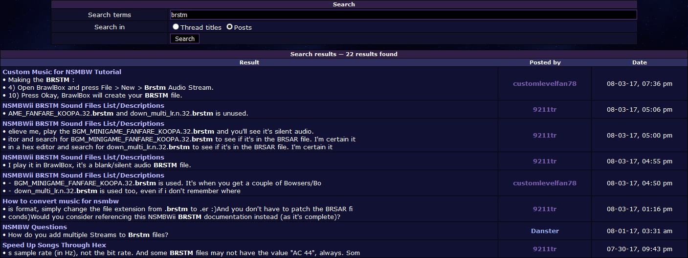

So whenever you use the search function ( http://horizonwii.net/?page=search), and when a user searches for posts containing a specific word, it searches all the threads found in the board:

Is there a way to search for posts (containing a specific word) ONLY in a specific thread (and not all the threads found in the board) in the search function?
Also another question:
Whenever a user sets his/her timezone offset in their profile settings, when it's daylight saving time, will the timezone offset
go forward 1 hour (for example if I set the offset to -5:00 before daylight saving time starts, and when daylight saving time starts, will it go forward 1 hour [to offset -4:00]) and once daylight saving time ends (usually in November), will it go back 1 hour (for example if I set the offset to -4:00 during daylight saving time, and when daylight saving time ends, will it go back 1 hour [to offset -5:00])? _________________________ Don't expect me to be very active here, since I have plans, and many other things in my life.
|